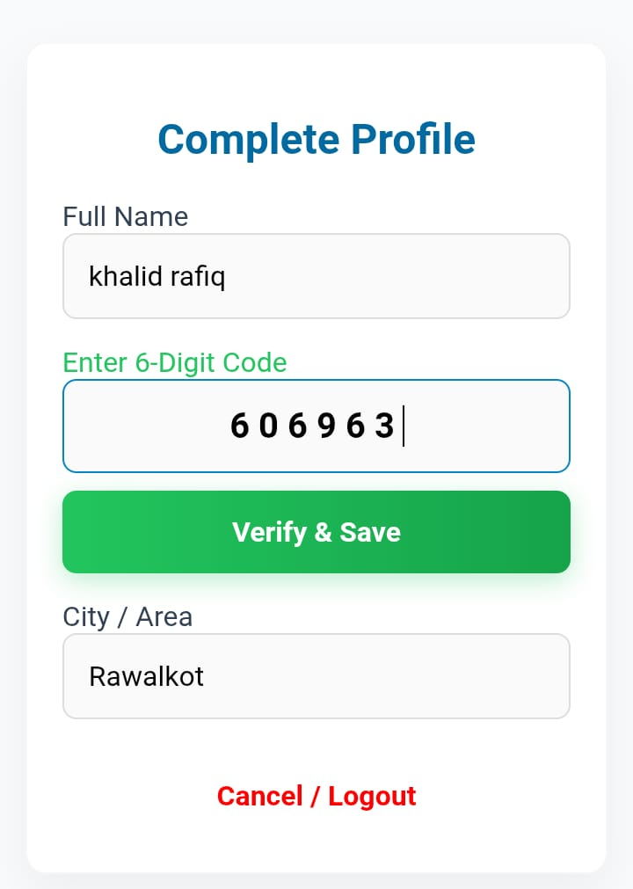
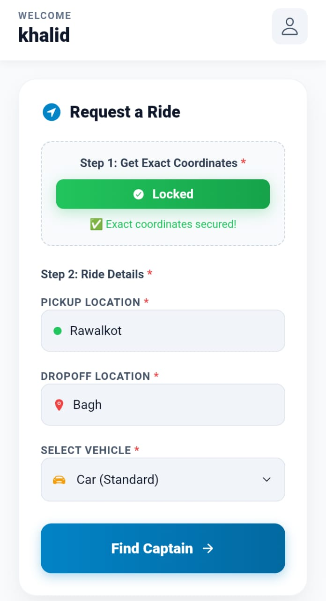
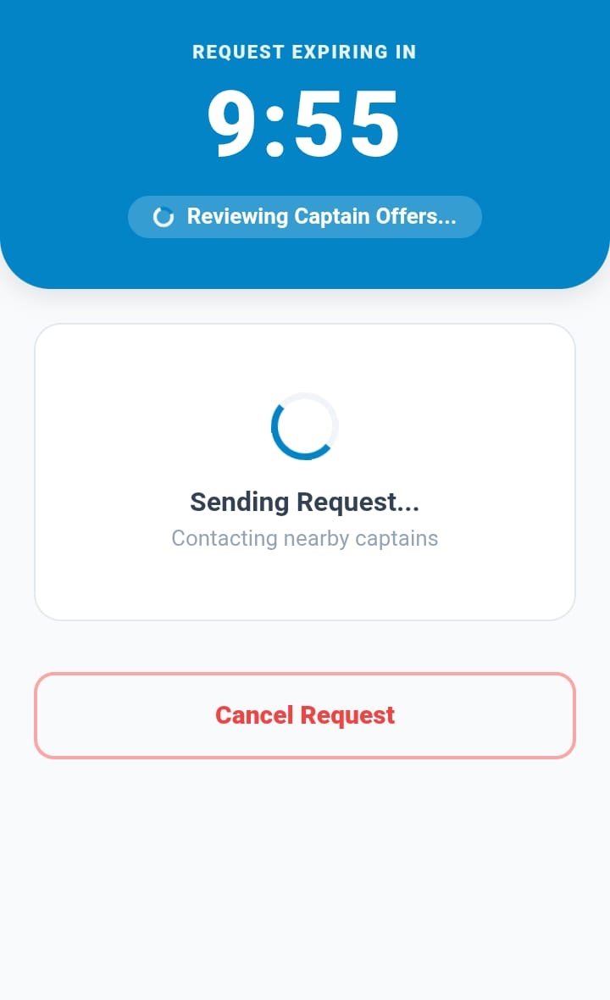

New riders easily register and verify their accounts using a mobile number, Name, and an automated OTP (One-Time Password) system.
The rider inputs their exact Pickup location, desired Drop-off point, and selects the required Vehicle Type for their journey.
With a single tap, the ride request is sent directly to the RideLink backend server to find the best matches.


